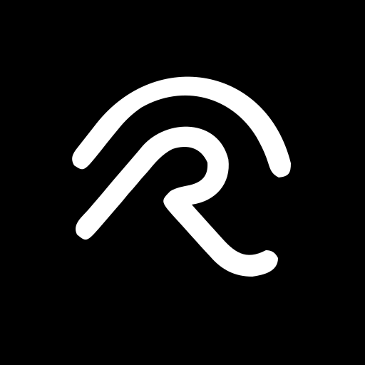
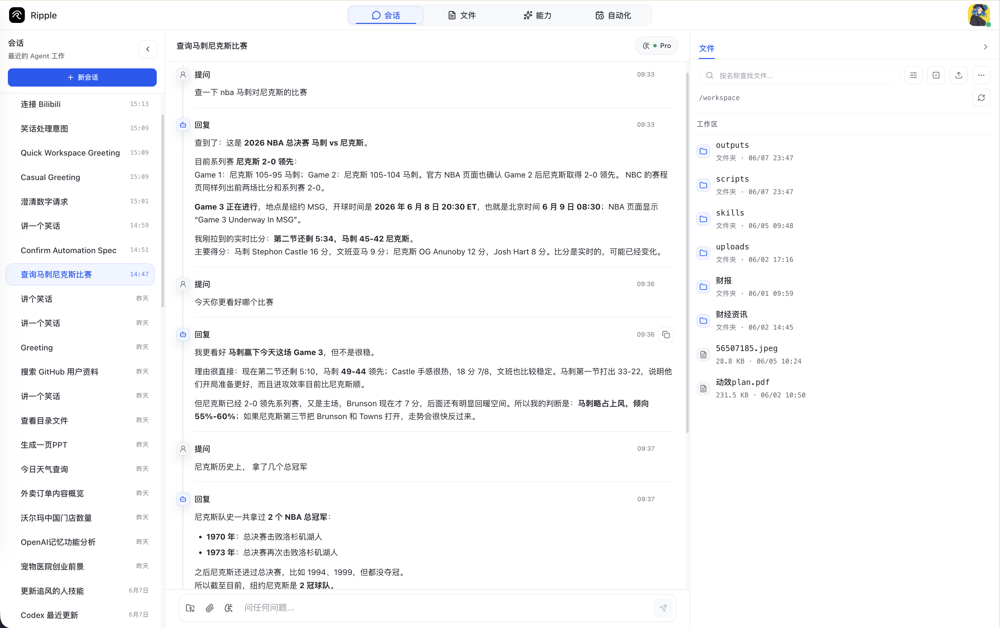
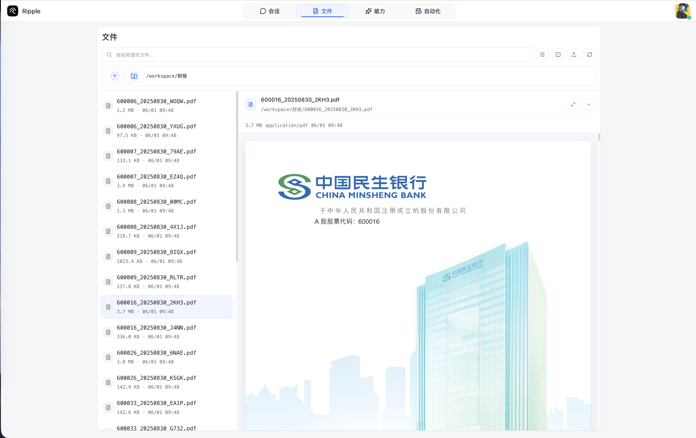
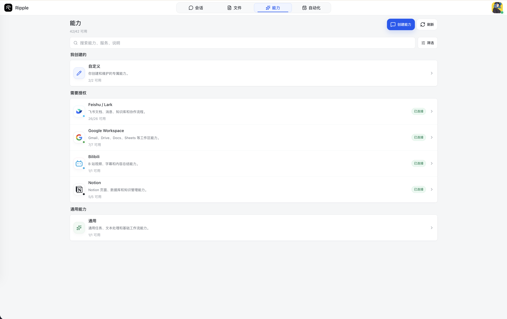
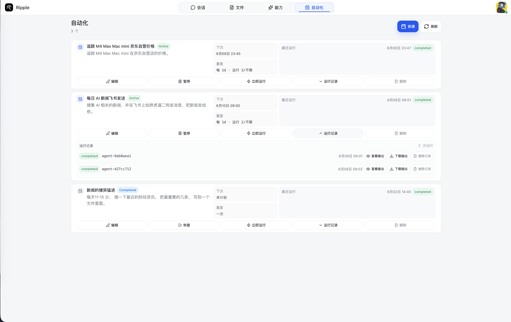
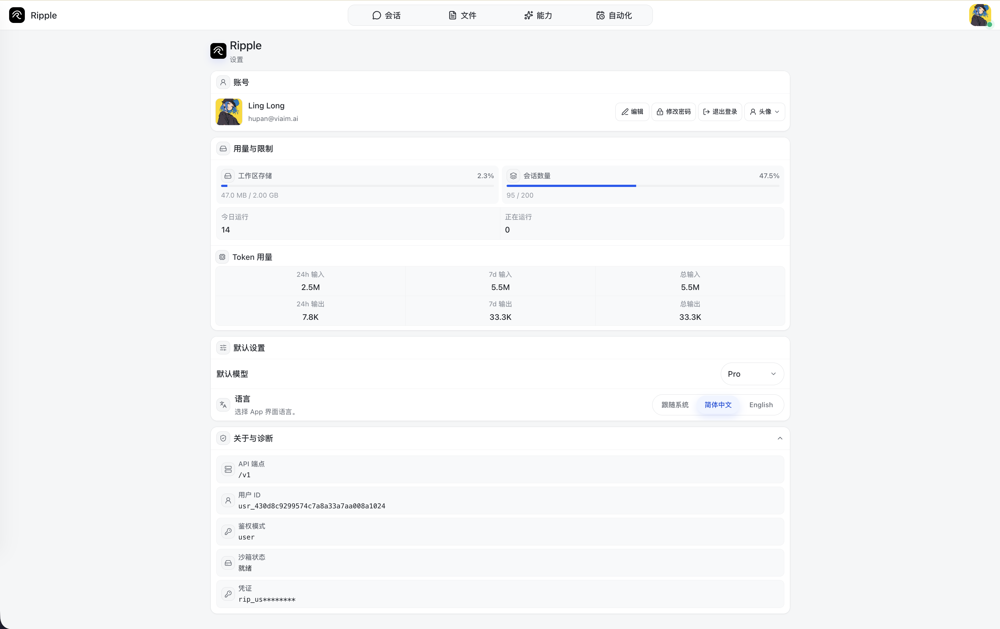

用户提出任务
每个请求进入一个长期 session，后续可以继续追问、恢复上下文或查看历史。

Ripple
每个任务都有上下文、文件和输出，不再只是一次聊天。
文件、预览、上传和生成结果都在同一条工作流里。
连接器、skills 和审批状态对用户保持可见。
Ripple 将 Agent 的执行过程整理成产品界面：左侧是长期会话，中间是完整对话和工具活动，右侧是任务产生的文件与工作区状态。
每个请求进入一个长期 session，后续可以继续追问、恢复上下文或查看历史。
工具活动、审批、connector 授权和输出状态都回到同一个产品表面。
文件、预览、日志和生成产物不会散落在聊天之外，可以继续被下一次任务使用。

用户可以上传输入、查看目录、预览产物、下载结果，并在下一次会话继续使用同一个长期 workspace。
Ripple 把可用能力展示给用户，也把授权、调度、配额和模型设置放在同一套产品节奏中。

共享 skills、自定义 skills、Google Workspace、Feishu / Lark、Bilibili 和 Notion 连接状态集中呈现。

计划任务使用同一个 session、workspace、权限模型和 Codex 执行链路。

默认模型、语言、诊断、quota 和 token 使用情况都面向真实用户组织。
Ripple 不把服务端业务逻辑塞进客户端。这个产品页聚焦 Web 客户端，统一调用 Ripple Server 的 `/v1` API。
管理用户隔离、session、workspace、connector auth、approval bridge、schedule 和 run 状态。
按 job 启动可信执行进程，在 managed permissions profile 下完成真实 Agent 工作。
Web 客户端专注展示、文件预览和授权流程，不承载后端控制面能力。
产品页保持轻，部署、skills 和后端架构细节放进文档。
欢迎联系、反馈问题或参与共同建设。我们也开放开发合作和实习机会。